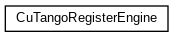
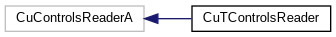
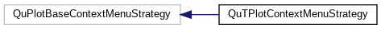
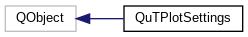

qumbia-tango-controls
1.x
Library on top of cumbia-qtcontrols and cumbia-tango
Class Hierarchy
Go to the textual class hierarchy




Generated on Tue Dec 3 2019 15:26:15 for qumbia-tango-controls by
1.8.15

 1.8.15
1.8.15